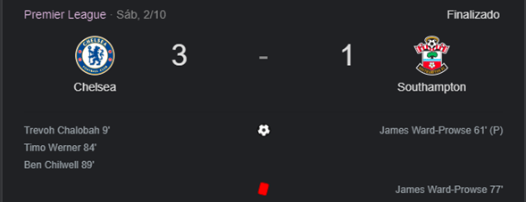
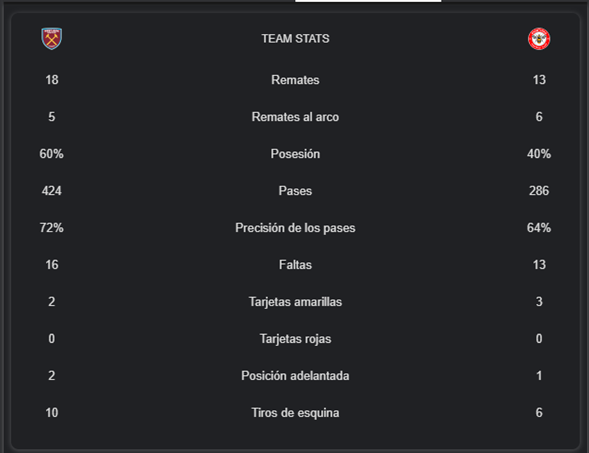

Etiquetas Utilizadas
Usos y parametros de las etiquetas utilizadas en esta practica.
Practica No.5
Deportes: Futbol de Inglaterra
Noticias mas relevantes
A la espera de que se evalúe el alcance de la lesión de Varane, los diablos rojos podrían llegar a este fin de semana sin sus dos centrales titulares, ya que Maguire está también de baja
Varane explica el papel que jugó Pogba en su fichaje por el Manchester United
El Manchester United tiembla por la lesión de Raphael Varane (28 años) en la final de la Nations League que les deja sin sus dos centrales titulares.
Así responde Mason Mount al ser preguntado por sus posibilidades de ganar el Balón de Oro.
El centrocampista del Chelsea está entre los 30 finalistas al prestigioso galardón Mason Mount (22 años) fue uno de los 30 finalistas que el pasado viernes anunció la prestigiosa revista francesa 'France Football' en la carrera por hacerse con el Balón de Oro 2021, galardón al que optan tres futbolistas españoles:
César Azpilicueta, compañero de Mount en el Chelsea, Gerard Moreno y el azulgrana Pedri, candidato también al Premio Kopa que se entrega al mejor jugador jugador Sub-21 del año.
De esta forma el centrocampista inglés vio recompensado su buen hacer tanto en el Chelsea, con el que se coronó campeón de Europa la temporada pasada, como con la selección inglesa, alcanzando la final de una Eurocopa que se acabó llevando Italia en la tanda de penaltis.
"Fue especial. Seguramente me enteré al mismo tiempo que todo el mundo, ver eso y estar al lado de esos nombres es un sueño. Trabajas duro y te dedicas durante años y luego ves algo así, demuestra que vale la pena y es solo el comienzo, esto no se detiene ahora", dijo Mount sobre su presencia entre los finalistas.
Mendy continuará en prisión
El juez rechazó por tercera vez la petición del lateral del Manchester City de salir de la cárcel bajo fianza, Benjamin Mendy, vuyo juicio tendrá lugar el 24 de enero, está acusado de cuatro violaciones y un asalto sexual.
Un juez de Chester, en Inglaterra, ha rechazado por tercera vez la salida en libertad bajo fianza de Benjamin Mendy, lateral del Manchester City acusado de cuatro cargos de violación y uno de asalto sexual.
Benjamin Mendy, de 27 años, que está en custodia desde hace siete semanas, pidió salir bajo fianza por tercera vez y esta ha sido rechazada. El defensa está acusado de atacar a tres mujeres diferentes, una de ellas menor de 18 años, en su domicilio en Cheshire.
Varane explica el papel que jugó Pogba en su fichaje por el Manchester United
El ex del Real Madrid ha elogiado a su compatriota en 'Premier League World'. Sigue la última hora y todos los rumores del mercado de fichajes, en directo.
Raphael Varane, que este domingo se coronó campeón de la Nations League con Francia al derrotar en la final a España (1-2) con un polémico gol de Kylian Mbappé, ha explicado en 'Premier League World' el papel que jugó su compatriota Paul Pogba en su fichaje por el Manchester United.
Resumen del partido
Audio resumen goles del partido
Partidos recientes
Manchester United vs Everton
Sábado 2 de octubre 6:31
Marcador:
Estadísticas del partido:
Cambios:
| Equipo | Entra | Sale | Minuto |
|---|---|---|---|
| Manchester United | Jadon Sancho | Anthony Martial | 57’ |
| Manchester United | Cristiano Ronaldo | Edinson Cavani | 57’ |
| Manchester United | Paul Pogba | Frederico Rodrigues | 70’ |
| Everton | Tom Davies | Anthony Gordon | 72’ |
| Everton | Lewis Norman | Demarai Gray | 90+2’ |
Chealse vs Southampton
Sábado 2 de octubre 9:00
Marcador:

Estadísticas del partido:
Cambios:
| Equipo | Entra | Sale | Minuto |
|---|---|---|---|
| Southampton | Ibrahima Diallo | Theo Walcott | 46’ |
| Chelsea | Mason Mount | Callum Hudson-Odoi | 65’ |
| Chelsea | Jorge Luiz Frello | Mateo Kovačić | 73’ |
| Southampton | Moussa Djenepo | Nathan Tella | 73’ |
| Chelsea | Ross Barkley | Ruben Loftus-Cheek | 83’ |
| Southampton | Mohamed Elyounoussi | Nathan Redmond | 87’ |
Wolves vs Newcastle
Sábado 2 de octubre 9:00
Marcador:
Estadísticas del partido:
Cambios:
| Equipo | Entra | Sale | Minuto |
|---|---|---|---|
| Newcastle | Jeff Hendrick | Joe Willock | 35’ |
| Newcastle | Dwight Gayle | Miguel Almirón | 70’ |
| Wolves | Leander Dendoncker | Francisco Trincão | 86’ |
| Wolves | Adama Traoré | Hwang Hee-chan | 90+3’ |
Burnley vs Norwich
Sábado 2 de octubre 9:00
Marcador:
Estadísticas del partido:
Cambios:
| Equipo | Entra | Sale | Minuto |
|---|---|---|---|
| Burnley | Jay Rodriguez | Matěj Vydra | 34’ |
| Burnley | Jóhann Berg | Aaron Lennon | 60’ |
| Norwich | Milot Rashica | Teemu Pukki | 80’ |
| Norwich | Lukas Rupp | Pierre Lees-Melou | 80’ |
| Burnley | Ashley Barnes | Chris Wood | 80’ |
| Norwich | Adam Idah | Josh Sargent | 90’ |
Leeds vs Watford
Sábado 2 de octubre 9:01
Marcador:
Estadísticas del partido:
Cambios:
| Equipo | Entra | Sale | Minuto |
|---|---|---|---|
| Watford | Ken Sema | Joshua King | 45+1’ |
| Watford | João Pedro Junqueira | Ozan Tufan | 59’ |
| Watford | Christian Kabasele | Francisco Sierralta | 68’ |
| Leeds | Tyler Roberts | Stuart Dallas | 78’ |
| Leeds | Pascal Strujik | Mateusz Klich | 90+4’ |
Brighton vs Arsenal
Sábado 2 de octubre 11:30
Marcador:
Estadísticas del partido:
Cambios:
| Equipo | Entra | Sale | Minuto |
|---|---|---|---|
| Arsenal | Nicolas Pépé | Martin ødegaard | 63’ |
| Arsenal | Alexandre Lacazette | Pierre Aubameyang | 72’ |
| Brighton | Alexis Mac Allister | Jakub Moder | 78’ |
| Brighton | Solly March | Pascal Groß | 84’ |
| Arsenal | Ainsley Maitland | Bukayo Saka | 90’ |
Tottenham vs Aston Villa
Domingo 3 de octubre 8:00
Marcador:
Estadísticas del partido:
Cambios:
| Equipo | Entra | Sale | Minuto |
|---|---|---|---|
| Aston Villa | Emiliano Buendía | Jacob Ramsey | 69’ |
| Tottenham | Giovani Lo Celso | Tanguy Ndombélé | 76’ |
| Aston Villa | Bertrand Traoré | Kortney Hause | 80’ |
| Tottenham | Bryan Gil | Lucas Moura | 89’ |
| Aston Villa | Cameron Archer | Danny Ings | 89’ |
West Ham vs Brenford
Domingo 3 de octubre 8:01
Marcador:
Estadísticas del partido:

Cambios:
| Equipo | Entra | Sale | Minuto |
|---|---|---|---|
| Brentford | Mathias Jensen | Shandon Baptiste | 29’ |
| Brentford | Mads Bidstrup | Frank Onyeka | 81’ |
| Brentford | Yoane Wissa | Bryan Mbeumo | 82’ |
Crsytal Palace vs Leicester City
Domingo 3 de octubre 8:01
Marcador:
Estadísticas del partido
Cambios:
| Equipo | Entra | Sale | Minuto |
|---|---|---|---|
| Crystal Palace | Michael Olise | Jordan Ayew | 53’ |
| Leicester City | Boubakary Soumaré | Hamza Choudhury | 60’ |
| Leicester City | James Maddison | Kelechi Iheanacho | 71’ |
| Crystal Palace | Jeff Schlupp | Conor Gallagher | 71’ |
| Leicester City | Marc Albrighton | Ademola Lookman | 80’ |
| Crystal Palace | Christian Benteke | Odsonne Edouard | 85’ |
Liverpool vs Manchester City
Domingo 3 de octubre 10:31
Marcador:
Estadísticas del partido:
Cambios:
| Equipo | Entra | Sale | Minuto |
|---|---|---|---|
| Manchester City | Raheem Sterling | Jack Grealish | 66’ |
| Liverpool | Roberto Firmino | Diogo Jota | 68’ |
| Leicester City | Joe Gomez | James Milner | 78’ |
Marcadores: Eurocopa
Alineacion de la seleccion de inglaterra
Top 3 jugadores mas caros
| Posicion | Jugador | Valor | foto |
|---|---|---|---|
| Extremo Izquierdo | Harry Kane | 120.00 mill. € | |
| Extremo Izquierdo | Jack Grealish | 100.00 mill. € | |
| Delantero Centro | Jadon Sancho | 90.00 mill. € |
Conclusiones individuales
Emmanuel Enrique Larraga Bueno
En conclusion nuevamente, esta practica me ayudo a reforzar mis conocimientos acerca de las estructuras de html y cuels son las etiquetas que son casi obligatorias para toda pagina web, como la etiqueta bofy, head, DOCTYPE, p, a, h1, h2 ,h3, h4 ,h5, video, audio etc. Ademas que esta practica me ayudo a conocer mas y nuevas etiquetas como el video y audio, que me ayudaron en esta practica a insertar video y audio para que la pagina se sienta mas completa en cuestion de informacion, respecto al futbol.
Alan Guillermo Ramos Zavala
El agregar imágenes o videos a una página para el tema del que este hecho lo hace más entretenido para la persona que este visitando la página y puede ayudar a entenderlo de mejor manera que solo con información, las imágenes como ya las hemos agregado en prácticas anteriores han servido para un mejor entendimiento sobre el tema que se está hablando, pero los videos son un aporte mucho mejor ya que puedes explicar de manera más detallada el contenido o el mensaje que se desea dar.
Adrian Fuentes Mendoza
Tras realizar la página web agregando esta vez el formato de HTML5 fue algo distinto, si bien es casi lo mismo en estructura solo que es como más organizado y seccionado ahora, es básicamente todo lo visto anteriormente, aunque ahora se incluyó el contenido de videos, algo que nunca había integrado a una página web realmente, sin duda fue una practica divertida en especial por ser de un tema libre, aunque el equipo integrado eligió sobre futbol, siendo para mi algo desconocido debido a no ser seguidor de este deporte, fue curiosa la investigación sobre equipos y detalles en ellos, aprendiendo que abarca muchas áreas que a simple vista no parece, dando así una practica eficiente en cuanto a estructura de HTML5 como de contenido visual.
Isaias Jair Solano Peral
En el desarrollo de la practica numero 5 se trabajo con las etiquetas notables de HTML5 , los fundamentos de HTML5, la declaración de DOCTYPE de HTML5 , esquemas de contenidos , el foote , la incorporación de elementos, entre otros. Las etiquetas de HTML5 tienen diferentes funciones y tienen diversas variaciones. Un parte interesante de la practica 5 fue la integración de vídeo y audio importado directamente sin el uso de ningún plugin externo que personalmente lo había visto o ocupado antes. w3schools fue de ayuda para entender la uso o función de las etiquetas que se requirieron en la practica. Puedo concluir que HTML5 tiene diversas etiquetas que cumplen con las necesidades para poder presentar contenido a través de una pagina web.
Enrique Escobedo Adame
Agregar imágenes y vídeos ayuda para que el usuario pueda interactuar de una mejor manera con el equipo de tal forma que vuelve entretenida la página para el usuario